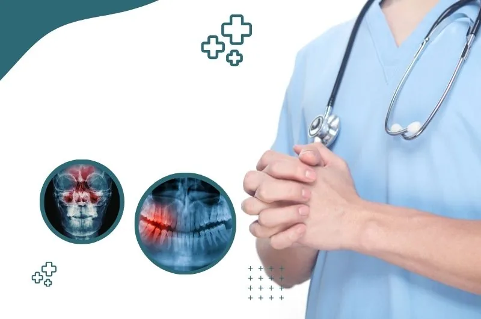

Zahnschmerzen durch Sinusitis?Ja, eine Nasennebenhöhlenentzündung (Sinusitis) kann durchaus Zahnschmerzen verursachen, und das ist sogar viel häufiger, als man denkt. Vielleicht wachen Sie eines Morgens mit pochenden Schmerzen in den oberen Zähnen auf und denken erschrocken: „Oh nein, ich habe Zahnschmerzen.“ Das eigentliche Problem liegt aber womöglich nicht in Ihren Zähnen, sondern in den Nasennebenhöhlen direkt darüber.
Warum verursachen die Nasennebenhöhlen Zahnschmerzen?
Der Grund für diesen überraschenden Zusammenhang in unserem Körper ist rein anatomisch. Die Kieferhöhlen (die Hohlräume hinter Ihren Wangenknochen) liegen direkt über Ihren oberen Backenzähnen. Tatsächlich reichen bei vielen Menschen die Wurzeln der oberen Backenzähne bis an den Boden dieser Nebenhöhlen oder sogar direkt in die Kieferhöhle hinein.
Bei einer Sinusitis sind diese Hohlräume entzündet, geschwollen und mit Flüssigkeit (Schleim) gefüllt. Die angesammelte Flüssigkeit und die Schwellung üben direkten Druck auf die unmittelbar darunterliegenden Zahnwurzeln und Nervenenden aus. Ihr Gehirn deutet dieses Drucksignal manchmal falsch und nimmt es als echten Zahnschmerz wahr; in der Medizin nennt man das „übertragenen Schmerz“.
Manchmal ist es auch umgekehrt. Eine tiefe Infektion oder ein Abszess an den oberen Zähnen kann sich nach oben ausbreiten und eine Sinusitis auslösen (man spricht dann von einer odontogenen Sinusitis). Wenn der Zahnschmerz an einem einzelnen Zahn sehr stark ist, Ihr Zahnfleisch geschwollen ist oder die Schmerzen trotz Behandlung der Nebenhöhlen länger als 10 Tage anhalten, müssen Sie einen Zahnarzt aufsuchen. Ein Zahnarzt kann die wahre Ursache der Schmerzen mithilfe eines Röntgenbilds oder einer 3D-Aufnahme (DVT) eindeutig feststellen.
Wie unterscheidet man Zahnschmerzen durch die Nebenhöhlen von einem Zahnproblem?
Um Zahnschmerzen durch eine Sinusitis (nebenhöhlenbedingte Zahnschmerzen) von einem gewöhnlichen Zahnproblem zu unterscheiden, müssen Ort, Art und Auslöser der Schmerzen sowie eventuelle Begleitsymptome sorgfältig untersucht werden.
Ort und Ausbreitung der Schmerzen
- Nebenhöhlenbedingt: Betrifft meist mehrere obere Backenzähne (Molaren und Prämolaren) gleichzeitig. Das liegt daran, dass die Wurzeln der oberen Backenzähne sehr nah an den Kieferhöhlen liegen oder in manchen Fällen in die Kieferhöhle hineinreichen. Die Schmerzen treten oft beidseitig auf.
- Gewöhnlicher Zahnschmerz: Wird meist an einem einzelnen Zahn gespürt, und die Schmerzquelle lässt sich klar bestimmen.
Art und Charakter der Schmerzen
- Nebenhöhlenbedingt: Meist ein dumpfer, anhaltender Schmerz oder ein Druckgefühl. Es kann sich anfühlen, als wären Ihre Zähne „gereizt“ (unter unangenehmem Druck).
- Gewöhnlicher Zahnschmerz: Meist ein scharfer, stechender, pochender oder heftiger Schmerz. Bei Karies oder einem Abszess können die Schmerzen stärker sein.
Auslösende Faktoren
- Nebenhöhlenbedingt: Verändert sich mit Kopfbewegungen. Vor allem Vorbeugen, Treppabgehen, Springen oder Hinlegen verstärken Schmerzen und Druck.
- Gewöhnlicher Zahnschmerz: Wird meist durch Empfindlichkeit gegenüber Heißem, Kaltem oder Süßem oder durch Druck (Kauen) ausgelöst. Lageveränderungen beeinflussen diese Schmerzen in der Regel nicht.
Begleitsymptome
- Nebenhöhlenbedingt: Die Zahnschmerzen gehen mit Symptomen wie verstopfter Nase, nach hinten in den Rachen laufendem Sekret, Druck- und Völlegefühl im Gesicht (Wangen und Stirn), Kopfschmerzen, Verlust des Geruchssinns oder Mundgeruch einher. Auch gelber oder grüner Nasenausfluss kann auftreten.
- Gewöhnlicher Zahnschmerz: Es können Symptome im Mund wie Schwellung und Rötung des Zahnfleisches, sichtbare Löcher im Zahn oder Zahnfleischrückgang auftreten.
Vergleichstabelle: Sinusitis-Schmerz vs. Zahnschmerz
|
Merkmal |
Nebenhöhlenbedingter Schmerz |
Schmerz mit Ursache im Zahn |
|
Anzahl der betroffenen Zähne |
Betrifft meist mehrere obere Backenzähne gleichzeitig. |
In der Regel auf einen bestimmten Zahn oder eine eng umgrenzte Stelle beschränkt. |
|
Art des Schmerzes |
Wird als dumpfer, anhaltender Schmerz oder pochender Druck beschrieben. |
Oft scharf, stechend, heftig oder einschießend. |
|
Wirkung des Vorbeugens |
Der Schmerz nimmt zu oder verschlimmert sich beim Bücken oder bei Kopfbewegungen. |
Meist keine wesentliche Veränderung bei Lage- oder Kopfbewegungen. |
|
Empfindlichkeit bei Wärme/Kauen |
Meist nicht vorhanden; die Zähne können sich durch den Druck „gereizt“ anfühlen, reagieren aber meist nicht auf Temperatur. |
Ausgeprägt; ausgelöst durch Zubeißen, Temperaturwechsel (heiß/kalt) oder Süßes. |
|
Begleitsymptome |
Begleitet von verstopfter Nase, Druck im Gesicht, in den Rachen laufendem Sekret oder Kopfschmerzen. |
Möglicherweise geschwollenes Zahnfleisch, sichtbare Karies, Zahnfleischrückgang oder örtlich begrenzte Rötung. |
Mit welchen Tests unterscheiden Zahnärzte zwischen Sinusitis und Zahnproblemen?
Zahnärzte folgen einem umfassenden Diagnoseverfahren – mit klinischer Untersuchung, Anamnese und modernen bildgebenden Verfahren –, um festzustellen, ob die Schmerzen durch eine Sinusitis oder durch ein tatsächliches Zahnproblem verursacht werden.
Die wichtigsten Tests und Methoden, mit denen Zahnärzte diese Unterscheidung treffen:
Klinische und körperliche Tests
- Perkussionstest: Der Zahnarzt prüft die Empfindlichkeit, indem er leicht auf jeden Zahn klopft. Konzentriert sich der Schmerz auf einen einzelnen Zahn, ist er meist zahnbedingt; besteht dagegen eine leichte Empfindlichkeit an allen oberen Backenzähnen, kann dies auf Druck aus den Nebenhöhlen hindeuten.
- Thermische Tests (heiß/kalt): Kälte- oder Wärmereize werden eingesetzt, um die Vitalität des Zahnnervs zu prüfen. Bei Schmerzen durch eine Sinusitis reagieren die Zähne in der Regel nicht übermäßig auf diese Temperaturreize, während bei Zahninfektionen (Pulpitis) ein scharfer und lang anhaltender Schmerz ausgelöst wird.
- Palpationstest (Abtasten): Der Zahnarzt übt Druck auf das Zahnfleisch oder direkt auf den Bereich des Jochbeins aus, in dem die Nebenhöhlen liegen, um die Quelle der Druckempfindlichkeit zu finden.
- Aufbisstest (mechanischer Test): Der Patient wird gebeten, auf eine bestimmte Stelle zu beißen. Zahnbedingte Schmerzen verstärken sich typischerweise beim Kauen oder Zubeißen, während dieser Auslöser bei nebenhöhlenbedingten Schmerzen seltener ist.
- Lockerungstest: Die Zähne werden auf Lockerung geprüft, um festzustellen, ob sich die Infektion ausgebreitet hat.
Bildgebende Verfahren
- Periapikale Röntgenaufnahme (Zahnfilm): Dient dazu, die Wurzelspitze eines einzelnen Zahns und das umliegende Knochengewebe in hoher Auflösung zu untersuchen; sie eignet sich gut, um Abszesse an der Wurzelspitze zu erkennen.
- Panoramaröntgen (OPG): Zeigt den gesamten Oberkiefer und die unteren Begrenzungen der Kieferhöhlen in einer Ebene. Eine „Verschattung“ oder Trübung der Nebenhöhlen lässt sich mit dieser Aufnahme erkennen.
- DVT (digitale Volumentomographie): Liefert ein detailliertes dreidimensionales Bild von Zähnen, Kieferknochen und Nebenhöhlen. Diese Technik ist der Goldstandard, um festzustellen, ob die Schmerzen durch Druck aus den Nebenhöhlen oder durch eine verborgene Entzündung an der Wurzelspitze entstehen, die sich in die Nebenhöhle ausgebreitet hat.
- Aufnahme nach Waters (okzipitomentale Projektion): Ein spezielles radiologisches Verfahren, um Luft-Flüssigkeits-Spiegel und den Füllungsgrad der Nebenhöhlen deutlicher darzustellen.
Anamnese und Beurteilung von Bewegungen
Bei der Diagnose verbindet der Zahnarzt die Antworten auf die folgenden Fragen und seine Beobachtungen mit den Testergebnissen:
- Test bei Lageveränderung: Der Patient wird gebeten, sich vorzubeugen oder den Kopf zu bewegen. Werden die Schmerzen beim Vorbeugen oder Springen stärker, ist das ein deutlicher Hinweis auf eine Sinusitis.
- Erfragen der Symptome: Der Patient wird gefragt, ob er kürzlich eine Erkältung, eine verstopfte Nase oder Mundgeruch (Halitosis) hatte.
Wie lange halten Zahnschmerzen durch die Nebenhöhlen an?
Wenn Sie Zahnschmerzen durch eine Sinusitis haben, hängt die Dauer ganz von der Art der zugrunde liegenden Nebenhöhlenentzündung (akut oder chronisch) und davon ab, wie Sie auf die Behandlung ansprechen.
Akute Sinusitis: wenige Tage bis einige Wochen
Wenn Ihre Zahnschmerzen durch eine „akute“ Sinusitis verursacht werden, die sich nach einer Erkältung oder einer Allergie entwickelt:
- Leichte Fälle: Sie klingen meist innerhalb weniger Tage von selbst oder mit einfachen Hausmitteln (Dampfinhalation, Kochsalzsprays) ab.
- Übliche Dauer: Die Symptome einer akuten Sinusitis halten meist 7 bis 10 Tage an. Wenn die Entzündung in den Nebenhöhlen abklingt und der Druck nachlässt, verschwindet auch der Druck auf die Zahnwurzeln.
- Grenzwert: Sie kann bis zu 4 Wochen andauern; Schmerzen, die länger anhalten, gelten jedoch nicht mehr als „akut“.
Chronische Sinusitis: ein „dumpfer“ Schmerz, der monatelang anhalten kann
Wird eine Nebenhöhlenentzündung chronisch, können auch die Zahnschmerzen deutlich hartnäckiger werden:
- Mehr als 12 Wochen: Bei einer chronischen Sinusitis kann der typische, dumpfe Schmerz in den oberen Backenzähnen länger als 12 Wochen (3 Monate) anhalten.
- Diese Art von Schmerz ist meist nicht durchgehend vorhanden; sie kann je nach Druck in den Nebenhöhlen oder Kopfhaltung zu- und abnehmen.
Odontogene Sinusitis: eine Behandlung ist unerlässlich
Hat sich die Infektion von einem Problem am Zahn (etwa Karies oder einem Abszess) auf die Nebenhöhlen ausgebreitet, statt in den Nebenhöhlen selbst zu entstehen, verschwinden die Schmerzen niemals von allein.
- In diesem Fall verschaffen Antibiotika nur vorübergehend Linderung; solange das eigentliche Problem – der Zahn – nicht behandelt wird (durch eine Wurzelkanalbehandlung oder Extraktion), können die Sinusitis und die damit verbundenen Schmerzen monatelang bestehen bleiben.
Was kann man tun, um die Genesung zu beschleunigen und sich besser zu fühlen?
Um die Dauer der Schmerzen zu verkürzen, sollte der Schwerpunkt darauf liegen, die Nebenhöhlen zu entlasten:
- Hausmittel: Dampfinhalation, warme Kompressen und viel Wasser trinken können den Schleim verflüssigen und den Druck schnell verringern.
- Medikamente: Abschwellende Mittel oder Nasensprays, nach ärztlichem Rat angewendet, können die Nebenhöhlengänge öffnen und den Druck auf die Zähne innerhalb weniger Tage lindern.
Wann sollten Sie „Stopp“ sagen?
Fachquellen betonen, dass Sie in folgenden Situationen unverzüglich einen Fachmann aufsuchen sollten:
- Wenn Ihre Zahnschmerzen länger als 10 Tage anhalten.
- Wenn die Schmerzen stärker werden oder sich auf einen einzigen Zahn konzentrieren.
- Wenn Sie eine Schwellung im Gesicht, Fieber oder Anzeichen eines Abszesses am Zahnfleisch haben.
Wie werden Zahnschmerzen durch eine Nebenhöhlenentzündung behandelt?
Die folgenden Methoden werden eingesetzt, um Zahnschmerzen durch eine Sinusitis zu lindern und die zugrunde liegende Ursache zu behandeln:
Hausmittel
Wenn die Schmerzen gerade erst begonnen haben und leicht sind, kann ein besserer Abfluss aus den Nebenhöhlen den Druck auf die Zahnwurzeln schnell verringern:
- Flüssigkeitszufuhr (viel trinken): Wasser verflüssigt den Schleim in den Nebenhöhlen und erleichtert seinen natürlichen Abfluss.
- Dampf inhalieren: Eine heiße Dusche oder das Inhalieren von Dampf aus einer Schüssel mit heißem Wasser (7–10 Minuten) kann Zahnschmerzen lindern, indem die Schwellung zurückgeht.
- Nasenspülung mit Salzwasser: Das Spülen der Nasengänge mit Kochsalzsprays oder Geräten wie einer Nasendusche (Neti-Kanne) löst Schleim und verringert den Druck unmittelbar.
- Warme Kompresse: Ein warmes Tuch auf dem Gesicht über den Wangenknochen fördert die Durchblutung der Nebenhöhlen und verringert den Druck.
- Kopf hochlagern: Mit zusätzlichen Kissen den Kopf im Liegen hochzulagern, hilft den Nebenhöhlen, besser abzufließen, und verhindert, dass sich die Zahnschmerzen nachts verschlimmern.
Medikamente
Halten Schmerzen und Entzündung an, können rezeptfreie oder verschreibungspflichtige Medikamente nötig sein:
- Schmerzmittel: Medikamente wie Ibuprofen oder Paracetamol lindern sowohl die Zahnschmerzen als auch begleitende Kopfschmerzen.
- Abschwellende Mittel: Nasensprays oder abschwellende Tabletten verringern die Schwellung des Nebenhöhlengewebes und verbessern so den Abfluss; dadurch lässt auch der körperliche Druck auf die Zahnwurzeln nach.
- Antibiotika: Handelt es sich bei der Sinusitis um eine bakterielle Infektion, kann Ihr Arzt Antibiotika verschreiben, um die Infektion zu beseitigen.
Professionelle zahnärztliche und medizinische Behandlungen
Fachliche Unterstützung ist unerlässlich, wenn die Schmerzursache unklar ist oder die Behandlung keine Wirkung zeigt:
- Zahnärztliche Untersuchung: Ein Zahnarzt fertigt ein Röntgenbild (oder eine 3D-DVT-Aufnahme) an, um festzustellen, ob die Schmerzen tatsächlich durch eine Sinusitis oder durch eine verborgene Karies oder einen Abszess verursacht werden.
- Behandlung der odontogenen Sinusitis: Liegt die Infektionsquelle tatsächlich in einer Zahninfektion statt in der Nebenhöhle (das ist in 10–40 % der Fälle so), muss zuerst eine Wurzelkanalbehandlung oder eine Extraktion des Zahns erfolgen, damit die Sinusitis abheilen kann.
- Endoskopische Nasennebenhöhlenoperation: In chronischen Fällen, die nicht auf Medikamente ansprechen, kann ein HNO-Arzt die Nebenhöhlengänge operativ erweitern. Dieser Eingriff beendet die Zahnschmerzen meist sofort.
Nebenhöhlenentzündung und Zahnschmerzen: häufige Fragen
Können Nasennebenhöhlenentzündungen Zahnschmerzen verursachen?
Ja, der Druck aus den Nebenhöhlen kann auf die Wurzeln der oberen Zähne wirken und Schmerzen verursachen.
Kann eine Nebenhöhlenentzündung Schmerzen in den unteren Zähnen verursachen?
Das ist nicht häufig, doch manchmal breitet sich der Druck auf unvorhersehbare Weise aus. Nebenhöhlenentzündungen betreffen meist die oberen Zähne. Die Kieferhöhlen liegen nahe an den Wurzeln der oberen Backenzähne, und diese sind am häufigsten betroffen. Der Schmerz wird meist in mehr als einem Zahn gespürt, nicht in einem einzelnen Zahn.
Können Nebenhöhlenentzündungen Kieferschmerzen und Kopfschmerzen verursachen?
Ja. Eine Entzündung der Nebenhöhlen kann Druck im Gesicht erzeugen, der bis in Kiefer, Wangen, Schläfen und Stirn ausstrahlen kann. Viele Menschen halten diese Beschwerden zunächst für Kiefergelenksprobleme oder Zahninfektionen.
Können Allergien Zahnschmerzen verursachen, die sich wie ein Zahnproblem anfühlen?
Ja. Saisonale Allergien verursachen Entzündungen und Schwellungen, die zu erhöhtem Druck in den Nebenhöhlen führen können. Dieser Druck kann in die oberen Zähne ausstrahlen, besonders während allergischer Schübe, und wie Zahnschmerzen empfunden werden.